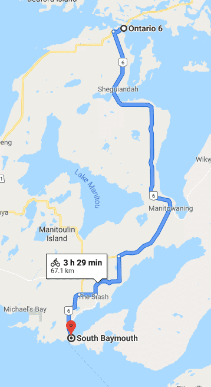
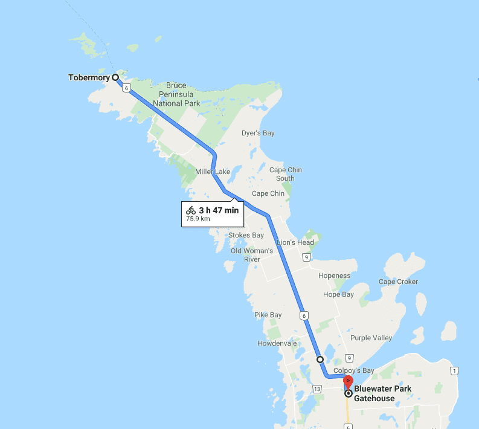

Woke up early in the morning and headed to the next town over for breakfast. Today was hot and sunny! We needed to make it to the ferry before noon and therefore had a time constraint. First we biked together and biked past a senior couple on recumbent bikes. They aimed to reach South Baymouth by the evening, but we needed to be there by noon so we said hello and then zoomed ahead. Sigi once again kicked into high gear and pushed ahead and soon I was biking on my own. I was a little annoyed about it as the zoom was unannounced, but by now I was used to it.
Part way through I took a detour as I wanted to visit a town called "The Slash". I was expecting to see something horror related but didn't even encounter a welcome sign. It was a bad detour as the road at times was rough and I was half expecting to get a flat and be delayed.
I made it to the ferry with plenty of time to spare and met up with Sigi there. Talked to some Harley Davidson riding folks about our travels.
The ferry was a nice break during the day. Charged up my two portable batteries that were getting depleted after days of camping in the wild. Had a beer and enjoyed the sun.
We then decided to go to Bruce Peninsula National Park. I warned Sigi that the Park has now turned into a fast food drive through with long lines and electronic displays leading up to the toll booth as everyone from Toronto was going there. It is so bad that you have to reserve in advance online what day and hour you will visit the park. However, we were on bikes and could easily drive past the long queue of cars and near the tollbooth we decided to sneak past using the park's exit lane. There was a second toll booth later on that we snuck past where we got some suspicions looks from some park rangers. The park rangers were in a truck and we felt that they were following us so me and Sigi booked it and then hid on a side road until the truck went past us.
Eventually, we made it to the gem of the park pictured below
From what I remembered as a kid it now was much more crowded. Sigi who has travelled plenty mentioned that there are many places like this in Europe that are much cooler. I'd love to visit them!
We left the park and decided to make it to Wiarton. It was a long ride and the time already approaching 1900, but I really wanted to make it to Waterloo the next day. The shoulder was small and the traffic was busy. Half way there we stopped and purchased some Coke. We saw the Coke commercials on the side of the buildings were very healthy and photogenic people looked like they were having the best time of their life drinking the sugar water. This was the first time after a lifetime of viewing these commercials that I understood the feeling the actors of the commercials were pretending to experience. It felt like I was in the commercial myself. Sigi felt the same way. Perhaps the sunset provided the perfect lighting for such a feeling. All the other time in my life Coke is usually connected to stuffing myself with a hamburger and does not provide the commercial like feeling.
After the pit stop we started biking again. As always me and Sigi were biking fast, not wanting to appear slow (at least me). At one point Sigi zoomed ahead all of a sudden and distance between us started to grow. I decided to end the constant surprise passing once and for all. I started pedalling real hard and soon caught up to Sigi who was now biking slower now that she thought she was far ahead. When I reached her I kept pedalling despite her surprise. I pushed ahead about 200 meters of her until Sigi started pedalling hard too. We stayed like this for the next hour (at least). She gained on the downhill, but I gained on the uphill. The distance between us oscillated but on average stayed the same with me ahead. I had no water and was sweating like I had never sweat during the entire trip. Eventually, we reached the big down hill leading into Wiarton and I was shouting with joy! I waited at the bottom of the hill for Sigi. When she biked up to me she said "I don't want to talk about it".
We snuck into the municipal campground through a hole in the fence and stayed at an empty lot. I went to the bathroom to take my first shower since Sault Ste Marie after wearing the same shorts, shirt, socks and underwear... Ended up doing basic laundry in the shower as well. My clothes were dirt soaked.
 